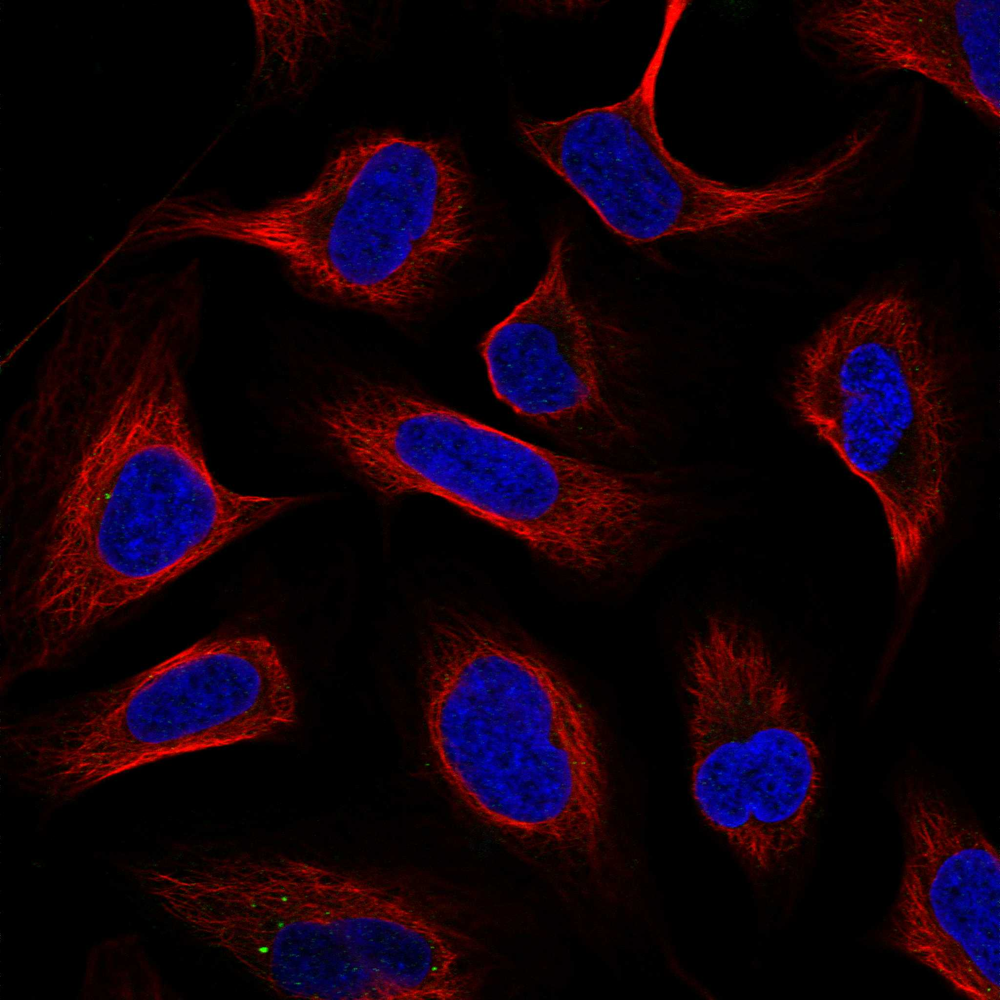
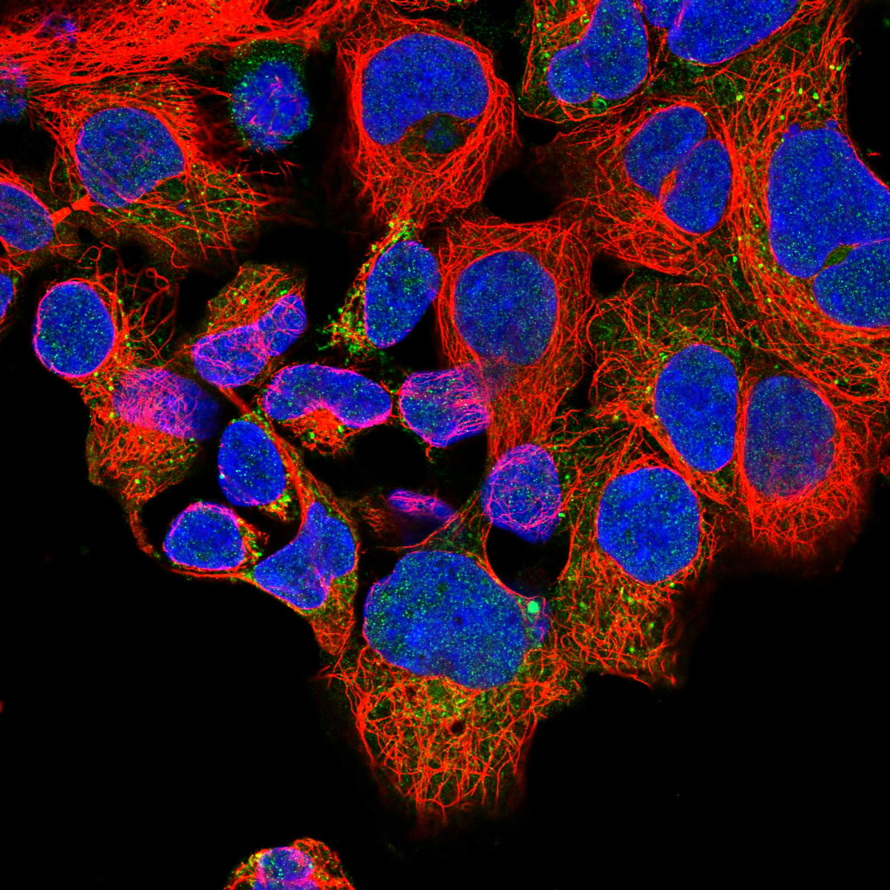

type: protein-evaluation gene: "FASTKD1" date: 2026-06-03 tags: [protein-scout, nuclear-protein, evaluation] status: scored ---
FASTKD1 核蛋白评估报告 (Full Re-evaluation)
1. 基本信息
| 项目 | 内容 |
|---|---|
| 基因名 / 别名 | FASTKD1 / KIAA1800 |
| 蛋白名称 | FAST kinase domain-containing protein 1, mitochondrial |
| 蛋白大小 | 847 aa / 97.4 kDa |
| UniProt ID | Q53R41 |
| 评估日期 | 2026-06-03 |
IF 图像:  
2. 评分总览
| 维度 | 得分 | 满分 | 加权后 | 关键证据摘要 |
|---|---|---|---|---|
| 核定位特异性 | 7/10 | ×4 | 28 | HPA: Mitochondria; 额外: Nucleoplasm; UniProt: Mitochondrion |
| 蛋白大小 | 8/10 | ×1 | 8 | 847 aa / 97.4 kDa |
| 研究新颖性 | 10/10 | ×5 | 50 | PubMed strict=18 篇 (≤20→10) |
| 三维结构 | 8/10 | ×3 | 24 | AlphaFold v6 pLDDT=85.1; PDB: 无 |
| 调控结构域 | 8/10 | ×2 | 16 | InterPro: IPR013579, IPR050870, IPR010622, IPR013584; Pfam: |
| PPI 网络 | 3/10 | ×3 | 9 | STRING 15 partners; IntAct 15 interactions |
| 互证加分 | — | max +3 | 1.5 | PDB+AF+STRING+IntAct cross-validation |
| 原始总分 | 136.5/180 | |||
| 归一化总分 | 75.8/100 |
3. 详细分析
3.1 核定位证据
| 来源 | 定位 | 可信度 |
|---|---|---|
| Protein Atlas (IF) | Mitochondria; 额外: Nucleoplasm | Supported |
| UniProt | Mitochondrion | Swiss-Prot/TrEMBL |
IF 图像获取: IF图像已下载并嵌入 (2张)
GO Cellular Component:
- mitochondrial matrix (GO:0005759)
- mitochondrion (GO:0005739)
- nucleoplasm (GO:0005654)
- ribonucleoprotein granule (GO:0035770)
结论: 主要核定位，HPA 可靠性良好，有辅助数据源支持。
3.2 蛋白大小评估
评价: 大小基本合适，可用于常规实验。
3.3 研究现状
| 指标 | 数值 |
|---|---|
| PubMed strict count | 18 |
| PubMed broad count | 20 |
| 别名(未计入scoring) | Aliases observed but not used for scoring: KIAA1800 |
关键文献: 1. Cardiac Myocyte-Specific Overexpression of FASTKD1 Prevents Ventricular Rupture After Myocardial Infarction.. *Journal of the American Heart Association*. PMID: 36789858 2. Cooperative Architecture of Mitochondrial Proteome Homeostasis.. *medRxiv : the preprint server for health sciences*. PMID: 41728289 3. FASTKD1 as a diagnostic and prognostic biomarker for STAD: Insights into m6A modification and immune infiltration.. *Experimental and therapeutic medicine*. PMID: 38873045 4. The novel cyclophilin-D-interacting protein FASTKD1 protects cells against oxidative stress-induced cell death.. *American journal of physiology. Cell physiology*. PMID: 31268778 5. Systematic Analysis of FASTK Gene Family Alterations in Cancer.. *International journal of molecular sciences*. PMID: 34768773
评价: 极度新颖，几乎未被系统研究（PubMed ≤20篇）。
3.4 三维结构分析
| 指标 | 数值 |
|---|---|
| AlphaFold 版本 | v6 |
| AlphaFold 平均 pLDDT | 85.1 |
| 高置信度残基 (pLDDT>90) 占比 | 56.2% |
| 置信残基 (pLDDT 70-90) 占比 | 31.9% |
| 中等置信 (pLDDT 50-70) 占比 | 4.5% |
| 低置信 (pLDDT<50) 占比 | 7.4% |
| 有序区域 (pLDDT>70) 占比 | 88.1% |
| 可用 PDB 条目 | 无 |
PAE (Predicted Aligned Error):
评价: AlphaFold 极高置信度预测（pLDDT=85.1，有序区 88.1%），结构可靠。
3.5 结构域分析
| 来源 | 结构域 |
|---|---|
| InterPro/Pfam | InterPro: IPR013579, IPR050870, IPR010622, IPR013584; Pfam: PF06743, PF08368, PF08373 |
染色质调控潜力分析: 多个已知结构域注释，AlphaFold预测质量高，结构域折叠可信。
3.6 PPI 网络
STRING 预测互作 (combined score >0.4):
| Partner | Combined Score | Experimental | 功能类别 |
|---|---|---|---|
| FASTK | 0.749 | 0.000 | — |
| FASTKD2 | 0.604 | 0.000 | — |
| TWNK | 0.589 | 0.000 | — |
| PTCD3 | 0.574 | 0.000 | — |
| TRUB2 | 0.566 | 0.090 | — |
| RPUSD3 | 0.543 | 0.000 | — |
| RPUSD4 | 0.525 | 0.000 | — |
| LRPPRC | 0.510 | 0.000 | — |
| PTCD1 | 0.505 | 0.000 | — |
| MT-ND6 | 0.505 | 0.000 | — |
实验验证互作 (IntAct):
| Partner | 方法 | PMID | |
|---|---|---|---|
| MYC | psi-mi:"MI:0676"(tandem affinity purification) | pubmed:21150319 | imex:IM-16995 |
| LRRK2 | psi-mi:"MI:0007"(anti tag coimmunoprecipitation) | pubmed:31046837 | imex:IM-26684 |
| - | psi-mi:"MI:0096"(pull down) | pubmed:31964889 | imex:IM-27520 |
| ARHGAP23 | psi-mi:"MI:0007"(anti tag coimmunoprecipitation) | pubmed:32203420 | imex:IM-26436 |
| M | psi-mi:"MI:0007"(anti tag coimmunoprecipitation) | imex:IM-27674 | pubmed:33208464 |
| ARL13B | psi-mi:"MI:0007"(anti tag coimmunoprecipitation) | pubmed:28514442 | doi:10.1038/na |
| FAM174A | psi-mi:"MI:0007"(anti tag coimmunoprecipitation) | pubmed:28514442 | doi:10.1038/na |
| CLEC2D | psi-mi:"MI:0007"(anti tag coimmunoprecipitation) | pubmed:28514442 | doi:10.1038/na |
| OPRM1 | psi-mi:"MI:0007"(anti tag coimmunoprecipitation) | pubmed:28514442 | doi:10.1038/na |
| SCN2B | psi-mi:"MI:0007"(anti tag coimmunoprecipitation) | pubmed:28514442 | doi:10.1038/na |
PPI 互证分析:
- STRING + IntAct 均有数据
- STRING partners: 15，IntAct interactions: 15
- 调控相关比例: 0 / 15 = 0%
评价: STRING 15 个预测互作，IntAct 15 个实验互作。调控相关配体占比 0%。
3.7 多库互证
| 维度 | 来源 | 结果 | 是否一致 |
|---|---|---|---|
| 三维结构 | AlphaFold pLDDT=85.1 + PDB: 无 | pLDDT=85.1, v6 | 仅预测 |
| 定位 | UniProt + HPA | Mitochondrion / Mitochondria; 额外: Nucleoplasm | 一致 |
| PPI | STRING + IntAct | 15 + 15 interactions | 数据充分 |
互证加分明细:
- PDB + AlphaFold 双源验证: +0
- 多库定位一致 (3源): +0.5
- STRING + IntAct 双源验证: +0.5
- 结构域 + AlphaFold 质量: +0.5
- PDB 多条目覆盖: +0
总分: +1.5 / max +3
4. 总体评价
推荐等级: ⭐⭐⭐⭐
核心优势: 1. FASTKD1 — FAST kinase domain-containing protein 1, mitochondrial，极度新颖，几乎未被系统研究（PubMed ≤20篇）。 2. 蛋白大小847 aa，大小基本合适，可用于常规实验。
风险/不确定性: 1. PubMed 18 篇，研究基础极有限，功能注释不完整 2. 结构数据质量可接受
下一步建议:
- [ ] 查阅最新关键文献补充研究背景
- [ ] 获取 Protein Atlas IF 图像确认亚细胞定位
- [ ] 设计体外实验验证核定位及潜在调控功能
5. 数据来源
- UniProt: https://www.uniprot.org/uniprotkb/Q53R41
- Protein Atlas: https://www.proteinatlas.org/ENSG00000138399-FASTKD1/subcellular
- PubMed: https://pubmed.ncbi.nlm.nih.gov/?term=FASTKD1
- AlphaFold: https://alphafold.ebi.ac.uk/entry/Q53R41
- STRING: https://string-db.org/network/9606.ENSP00000
- Data fetched live: 2026-06-03